Practica 2. Señales en tiempo discreto.
Contents
Integrantes:
Juan Pablo Jimenez Leaños
Samuel Sánchez Duque.
Objetivo de la practica.
- Manipulación básica de MATLAB.
- Gráficas de señales reales y complejas discretas.
- Transformación de señales discretas (escalamientos y traslaciones).
1. Solucion del problema 3.11-2
Consider the discrete-time function f[n] = e−(n/5)cos(πn/5)u[n]. Section 3.11 uses anonymous functions in describing DT signal.
f = @(n) exp(-n/5).*cos(pi*n/5).*(n>=0);
While this anonymous function operates correctly for a downsampling operation such as f[2n], it does not operate correctly for an upsampling operation, such as f[n/2]. Modify the anonymous function f so that it also correctly accommodates upsampling operations.
u= @(n) 1.0.*(n>=0); f = @(n) exp(-n/5).*cos((pi*n)/5).*u(n).*(1./(mod(n,1)==0)); n=(-10:10); stem(n,f(n)); grid on; set (gca, "xaxislocation", "origin"); set (gca, "yaxislocation", "origin"); title('Gráfica de la señal impar f ( n )'); axis([-10 10 -.6 1.1]);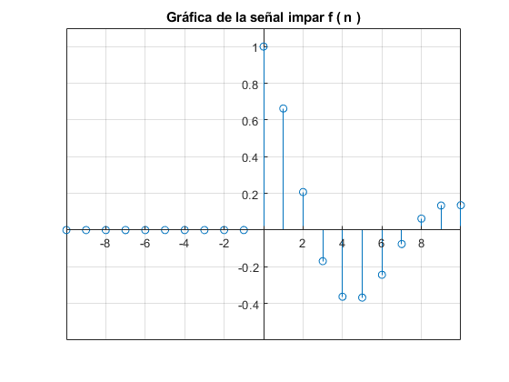
stem(n,f(2*n)); grid on; set (gca, "xaxislocation", "origin"); set (gca, "yaxislocation", "origin"); title('Gráfica de la señal f ( 2 * n )'); axis([-10 10 -.6 1.1]);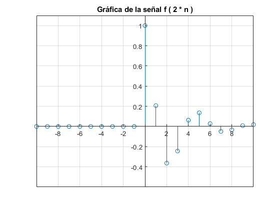
Cuando graficamos a mano nos dimos cuenta que el error es que te lo completa el software la grafica añadiendo puntos donde no existen por lo cual a la funcion anonima se le aplica un modulo para eliminar los impares pero esto termina en 0 y al añadir el 1/modulo hacemos que cuando eso sea 0 se indetermine y por ende no exista.
stem(n,f(n/2)); grid on; set (gca, "xaxislocation", "origin"); set (gca, "yaxislocation", "origin"); title('Gráfica de la señal f ( n / 2 )'); axis([-10 10 -.6 1.1]);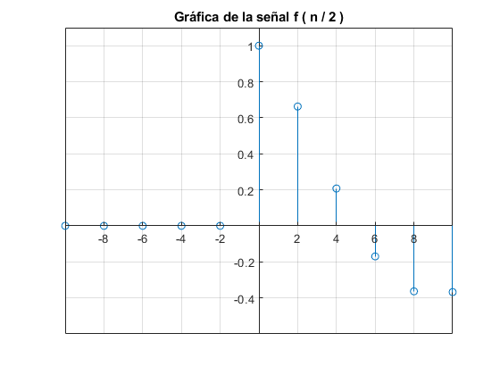
2. Solución del problema 3.2-7.
For the signal shown in Fig. P3.1-1b, sketch the following signals:
x = @(t) ((t).*((t>=(0))&(t<=(3)))+(-t+6).*((t>3)&(t<=6))); t=(-18:18); stem(t,x(t)); grid on; set (gca, "xaxislocation", "origin"); set (gca, "yaxislocation", "origin"); title('Fig. P3.1-1b'); axis([-8 13 -5 5]);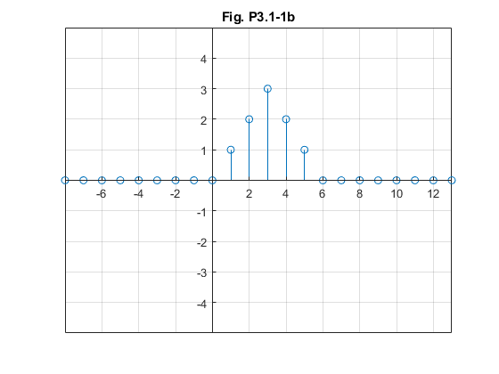
a) x[−n]
b) x[n+6]
c) x[n−6]
d) x[3n]
e) x[n/3]
f) x[3-n]
a)
stem(t,x(-t)); grid on; set (gca, "xaxislocation", "origin"); set (gca, "yaxislocation", "origin"); title('Gráfica de la señal x ( - t )'); axis([-8 13 -5 5]);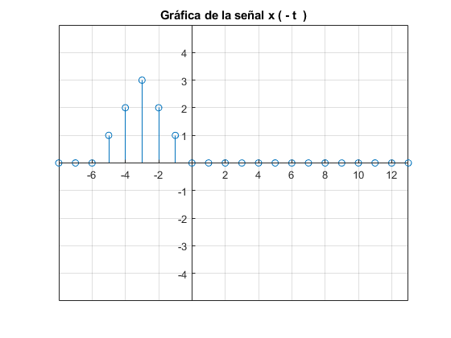
b)
stem(t,x(t+6)); grid on; set (gca, "xaxislocation", "origin"); set (gca, "yaxislocation", "origin"); title('Gráfica de la señal x ( t + 6 )'); axis([-8 13 -5 5]);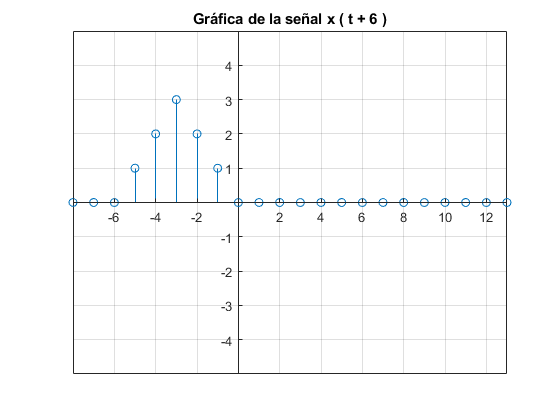
c)
stem(t,x(t-6)); grid on; set (gca, "xaxislocation", "origin"); set (gca, "yaxislocation", "origin"); title('Gráfica de la señal x ( t - 6 )'); axis([-8 13 -5 5]);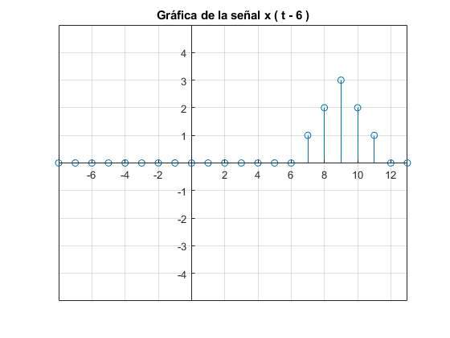
d)
stem(t,x(3*t)); grid on; set (gca, "xaxislocation", "origin"); set (gca, "yaxislocation", "origin"); title('Gráfica de la señal x ( 3 * t )'); axis([-8 13 -5 5]);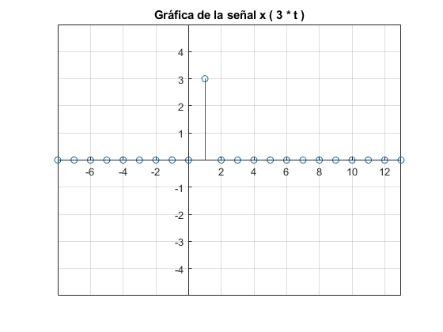
e) Aqui para no modificar la función solo añadi un paso mayor.
t=(-18:3:18); stem(t,x(t/3)); grid on; set (gca, "xaxislocation", "origin"); set (gca, "yaxislocation", "origin"); title('Gráfica de la señal x ( t / 3 )'); axis([-2 19 -5 5]);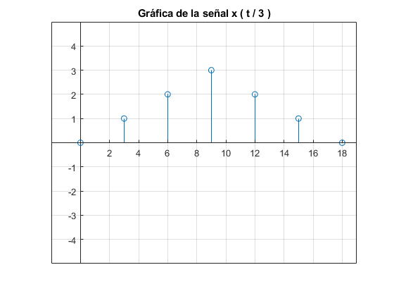
f)
t=(-18:18); stem(t,x(3-t)); grid on; set (gca, "xaxislocation", "origin"); set (gca, "yaxislocation", "origin"); title('Gráfica de la señal x ( 3 - t )'); axis([-8 13 -5 5]);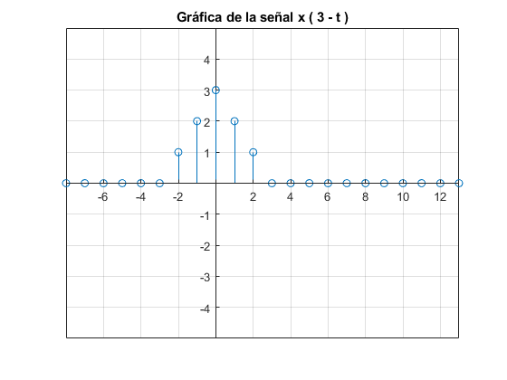
3. Solución del problema 3.11-6
Función de la energia en caso que la queramos añadir a una funcioón nueva.
function [ E_x ] = Energia (t,x)
x = @(t) (función) ;
t = (rango);
E_x = sum(x(t).*x(t));
printf("La energia es %d",E_x);
end
___________________________________________________________________________________________________________________________
Funcion de la potencia por si se le quiere añadir.
function [ P_x ] = Potencia (t,x);
x=@(t) (función);
t = (rango);
P_x= (1/Numero de intevalos de la señal).*(sum(x(t).*x(t));
printf("La potencia es %d",P_x);
end
4. Solución del problema 3.1-1 c) y 3.1-2 b).
x = @(t) 3.*t.*((t>=-3)&(t<=3)); t=(-18:18); stem(t,x(t)); grid on; set (gca, "xaxislocation", "origin"); set (gca, "yaxislocation", "origin"); title('Gráfica de la señal original 3.1-1 c)'); axis([-4 7 -10 10]);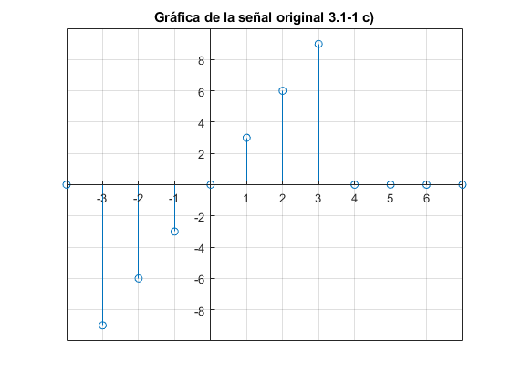
E_x = sum(x(t).*x(t));
fprintf('El valor de la energia es: %d',E_x);
El valor de la energia es: 252
x = @(t) mod(t,4)-mod(t,4); t=(-15:15); stem(t,x(t)); grid on; set (gca, "xaxislocation", "origin"); set (gca, "yaxislocation", "origin"); title('Gráfica de la señal original 3.1-2 b)'); axis([-15 15 -4 4]);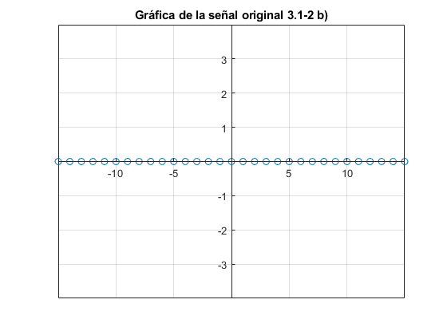
Referencias
B.P. Lathi. (2018). Lynear Sistems and signals. New York : Oxford.